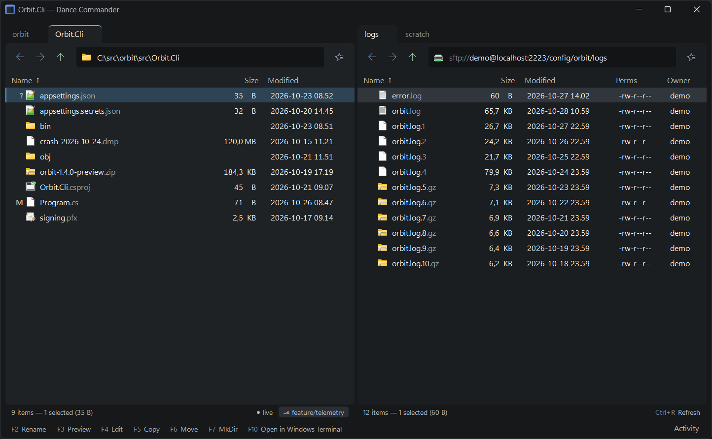

Two-pane file manager · Windows · 0.9 preview
An old-school, orthodox file manager built with modern aesthetics and ergonomics
Dance Commander is designed to be fun to use: calm when idle, powerful when you need it, and quick to respond. The UI uses no modal dialogs and very limited chrome.

What it is
Calm until you reach for it
It's native for Windows, but meant for users who interact with Linux and possibly macOS too. It understands file permissions and dot files, and OneDrive too. Connecting to remote systems is supported over SFTP or WebDAV.
A bespoke file manager, it is made to fit the workflow of a developer: a seasoned computer user who has to interface with the corporate environment. I only build features I use and can test myself, so it's not meant to be everything for everyone. You are welcome to add the features you need, though: Dance Commander is available under the MIT licence and has scripting support for new tools and views.
The commander, like you remember it
Two panes. Tab between them, copy or move to the other side with F5 and F6. Use your commander muscle memory, or build it with the key legend and the command palette.
Every key can also be changed in Settings (Ctrl+,).
The browser, pioneer of modern, minimalist chrome
An address bar that completes as you type. Type a word that couldn't be a path and it searches. Close the window and it comes back as you left it.
Back, forward, bookmarks... Everything just works like you expect it to.
Everything is a place
Local disks, SFTP, WebDAV and the inside of zip, 7z, tar and rar files share one listing, nested as deep as you like: a zip on an SFTP server opens in place. Search results, a flattened tree and a saved collection are places too.
Recovering gracefully
Ctrl+Z undoes copies, moves, renames and deletes to the Recycle Bin. The two things it can't undo, a permanent delete and replacing a file, happen only when you choose them. Errors say what happened and what to do, and name the cause: “open in PowerShell in Windows Terminal”, not “the file is in use”.
No modal dialogs. Ever.
A conflict, a password, a host key or an overwrite is asked inline, in the pane that needs it. Ignore it, keep browsing, come back.
How do I use it
Start with the mouse, stay for the keyboard
Dance Commander works intuitively with the mouse. But I suggest using the keyboard as much as you can: you'll love it!
Address bar
Ctrl+L brings you to the address bar, which auto-completes your destinations. You can also search by typing into it. Esc brings you back out.
Command palette
Ctrl+Shift+P opens the palette: over 100 commands in an easily searchable list, together with their hotkeys, so next time you may not need to open it at all.
The legend along the bottom of the window shows the F-key actions, and holding Ctrl, Shift or Alt shows that layer of the keyboard.
Type to filter
When a file list is focused, just type to sort and filter it at the same time. Press Space and type a second bit to filter further with a second search word.
The same logic drives the address bar, the search and the command palette.
Drag and drop
For the mouse-oriented, there is drag and drop with spring-loaded folders, tabs and even the Back, Forward and Up buttons: hold a drag over one and it opens. A rarer treasure is the global shelf: call it in front of any window with Win+Shift+B to drag files into and out of Dance Commander while you work.
For developers
Knows where you work
The branch of the repository you're in, and the branch of every repository in a folder of them. Git's own letters in git's own colours on every changed file, rolled up to the folders above it. A Worktrees listing that keeps itself up to date while your parallel checkouts come and go.
The preview (F3) states encoding and line endings as facts, and says mixed with the counts, because that is the case that costs an afternoon. Tabs are drawn, so a Makefile looks the way make reads it.
The programs you already have bring their own commands as soon as they are found: Git Bash and Windows Terminal here, the repository in VS Code, Fork or GitKraken, Beyond Compare on the marked files or the two panes. Ctrl+E runs a line in this folder, on a server too, and Shift+Enter runs the script under the cursor instead of opening it.
Your own tools join the menus, the palette and the keymap from one JSON file: a build in a dev container as a background job that tells you when it's done, a checksum whose output stays in the pane.
// %APPDATA%\DanceCommander\tools.json
{
"id": "open-in-pwsh",
"title": "Open in PowerShell",
"exec": "pwsh",
"args": ["-NoExit"],
"workingDirectory": "${dir}",
"launch": "console",
"keybinding": "Ctrl+Shift+K"
},
{
"id": "md5",
"title": "MD5",
"appliesTo": "file|multi",
"exec": "certutil",
"args": ["-hashfile", "${path}", "MD5"],
"launch": "capture",
"forEachSelected": true
}Hot-reloaded. Arguments are an argv array, so an odd filename is just a filename.
Small features I like
- Copy and paste text and images as new files
- A new file with Shift+F4, straight into your editor, no save dialog
- Group the marked files into a new folder with Ctrl+Shift+G, the name already proposed
- Integration with multiple different shells
- Worktree switcher for git
Speed
Fast, and never makes you wait
Navigation and app launch speed are important, so the important bits are timed and optimized when needed. Rows stream in as they are read, and git marks and icons are added afterwards. Remote listings are remembered, and the server folder under your cursor is fetched before you open it, so Enter finds it ready. Search starts in the places you are most likely to look, skips network drives that would hold it up, and carries on past files it can't read. The UI gives instant feedback when something happens.
Speed is also about eliminating extra steps: An automatic chmod +x when you upload a binary, or a misnamed .tar.gz that still opens as one.
Dense, not cluttered
No ribbon, no strip of sixteen icons, no borders around everything. Folders and files the app is hiding are always counted, with the key that brings them back.
My favourite kind of feature is one that doesn't take up screen real estate: it's just there when you reach for it, the way you would expect it to be.
Not for everyone, on purpose
- Windows only. It uses the shell, the credential store and the taskbar freely.
- No icon view, no breadcrumb bar and no hex editor.
- No plugin marketplace: extensions are scripts you own.
- No cloud-storage accounts. Local, SFTP, WebDAV and archives, done well.
Weighing it against other file managers? An honest comparison →
Get it
Install it and pin it
0.9 is a preview. It is usable every day, but some obvious things (ejecting drives, emptying the Recycle Bin) are still missing, and there will be bugs. Tell me what you find.
Download the installer or the zip from the releases page. You need Windows 10 2004 (build 19041) or later on x64.
The MSI is the recommended one: it installs for your user only, so no administrator rights, with a Start menu entry and an Open in Dance Commander item in Explorer's menu. The zip is for trying it without installing: unpack it anywhere, and it touches no registry. Pin it to the taskbar either way.
Dance Commander is open source under the MIT licence. To build it yourself you need the .NET 10 SDK:
git clone https://github.com/elefAntti/dance_commander
cd dance_commander
scripts\publish-local.batOr try a build without installing it: dotnet run --project src/DanceCommander.App -- --new-window